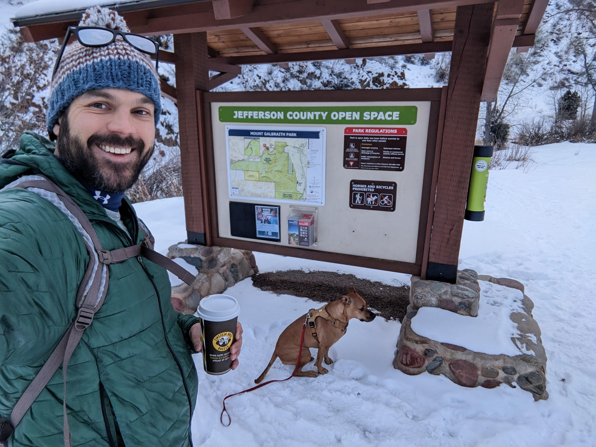
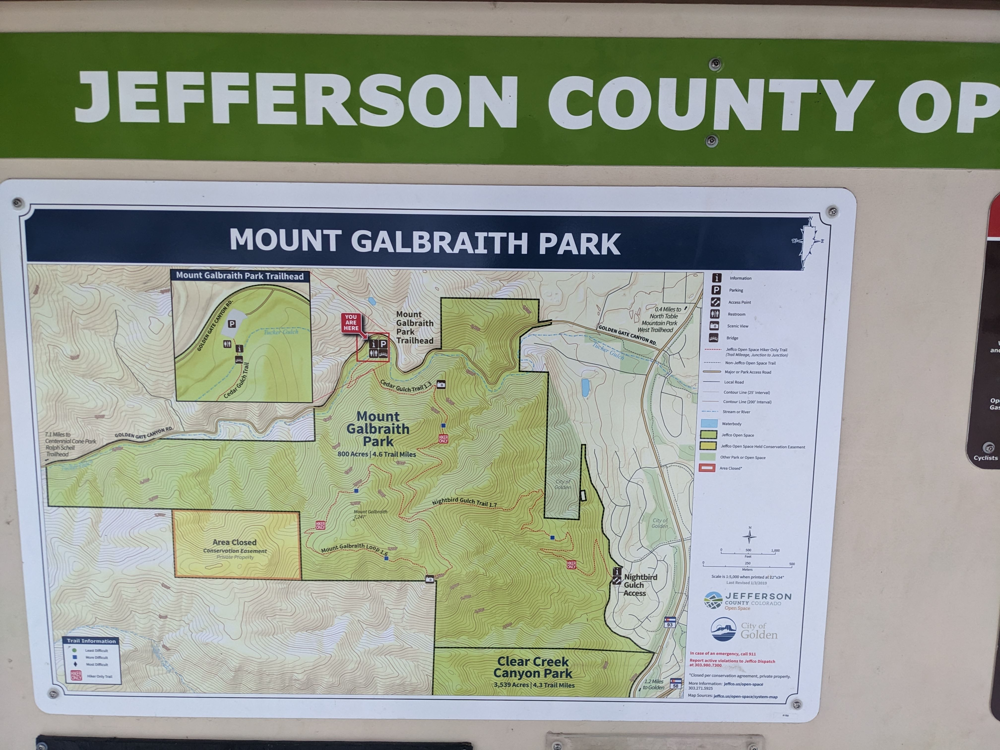
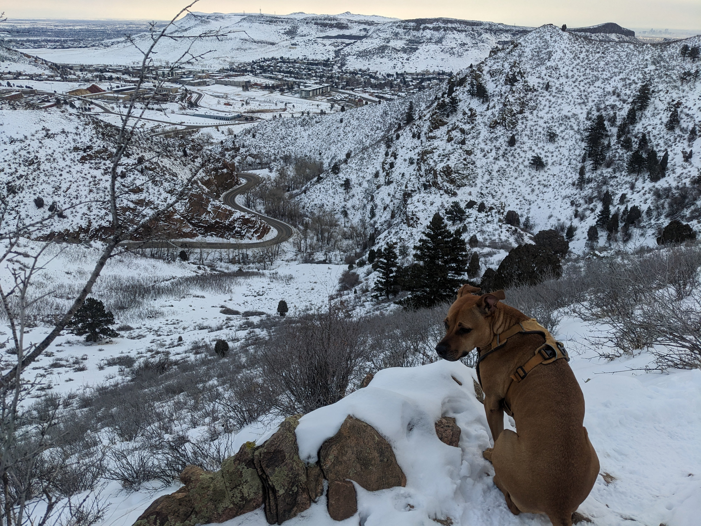
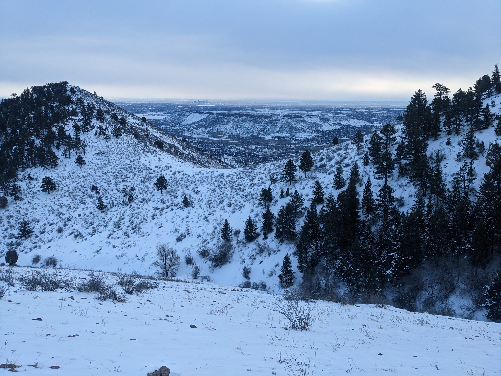
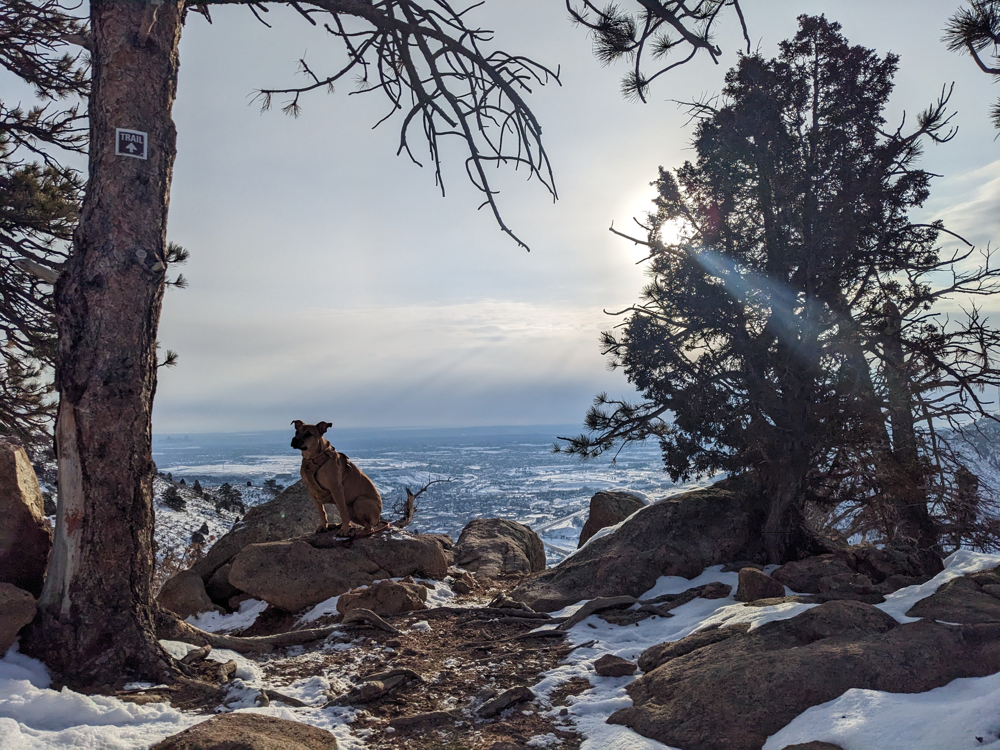
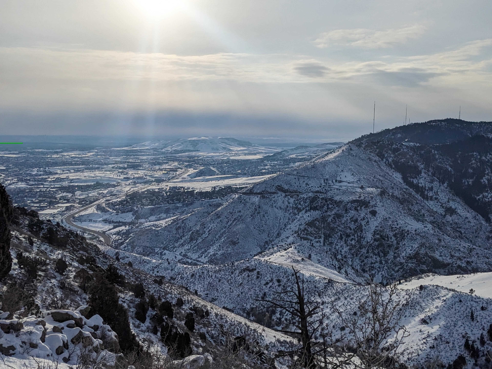

This was a great first real day of hiking! The first trail head, mount Galbraith, is 14 minutes from my front door! Score! This is what we moved here for!
First we hit up Einstein Brothers for a coffee and a couple bagels and shmear as a quick pick me up (and a well needed snack later - just you wait)

Like any self-respecting trail head, a map greeted us at the onset. Jefferson County (where we live) has a series of “open spaces” which are essentially all the parks and hikes and green area. It’s really cool.

After a couple of switch backs we caught a quick glimpse of the north end of Golden, CO - we had to drive through Golden to get to the trail head. I can only imagine Kora was thinking “Food, warmth, humans - lets go back that way…”

After we rounded the first knob, across a saddle from us was the Coors brewery! I drove past on the way in - it was more impressive from the highway - and was looking forward to gazing back down on such a stanchion of American mass production (note: All the big “American” beer brands are no longer owned by American companies).

An underwhelming submission to Window’s stock background was behind us as we looked Northwest - it was much more interesting looking back across the foothills in person. This is how most of my landscape shots end up. You could see old fire damage on many of the stumps as you toil up this mountain.
On second though, I’ll spare you the photo. Carry on reading, and thank me the next time you see me.
The next photo spot was perfectly framed by an old red pine and a young juniper. Suffice it to say my current quest is to beat these photos on my next few weeks of hiking. The following shots are, as this goes to press, front runners for 2023 shots of the year.


This trail loops the top of this mountain, and on the SE side of the loop, we were presented with an awesome view, the clouds and sun combining to give an epic landscape that unfolded off into the distance. Landscape shots are not my specialty, as mentioned before, but this one has everything; depth, good lighting, and well… my blessing I guess.
(also, I’m not sure how this panorama will show up so I’m including a rectangular shot as well, semi-dups)


Then we hiked down, and the hike was done! A few hours and 4+ miles before 10 am - not bad!
Bonus content!
Here is my attempt at embedding the map of the actual hike I tracked into this blog! Eek! Exciting!